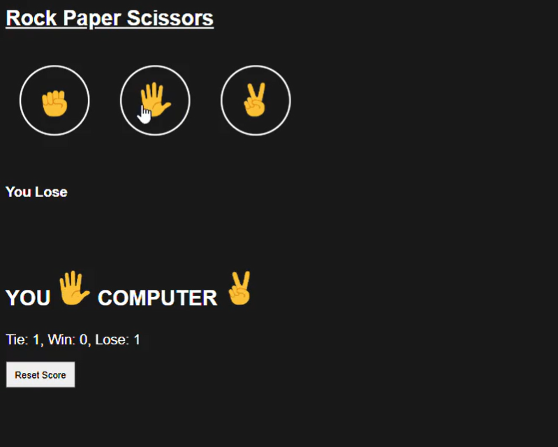

College Club Management System
A comprehensive web-based platform designed to streamline and manage college club events, user roles, and communication between Admins, Rescue Team, and Club Members. The system allows
seamless event management, user role switching, profile updates, and real-time messaging for effective coordination.
Tech Used: HTML, CSS, JavaScript, PHP
Youtube-Demo
.png)
A fully responsive YouTube homepage clone built using only HTML and CSS, showcasing strong frontend layout skills. The design uses Flexbox for layout structure.
It adapts seamlessly to different screen sizes, mimicking YouTube’s modern, clean look.
Tech Used: HTML, CSS (No JavaScript)
Rock-Paper-Scissor
A simple and interactive web-based Rock-Paper-Scissors game built using HTML, CSS, and JavaScript. Users can play against the computer, and the game tracks each round’s result with visual feedback and score updates. It’s a great demonstration of DOM manipulation.
Tech Used: HTML, CSS, JavaScript, PHP View Project
Flood Victim Detection And Rescue System

A smart emergency response platform built using Next.js, Supabase, Python, and Testrate.js to detect flood victims and coordinate rescue operations. The system enables real-time monitoring, victim detection using object detection models, and role-based access for public users, rescue teams, and admins. It supports live alerts, camp info, and efficient communication during flood situations.
Tech Used: Nextjs, Supabase, Python, Testratejs(YOLO),